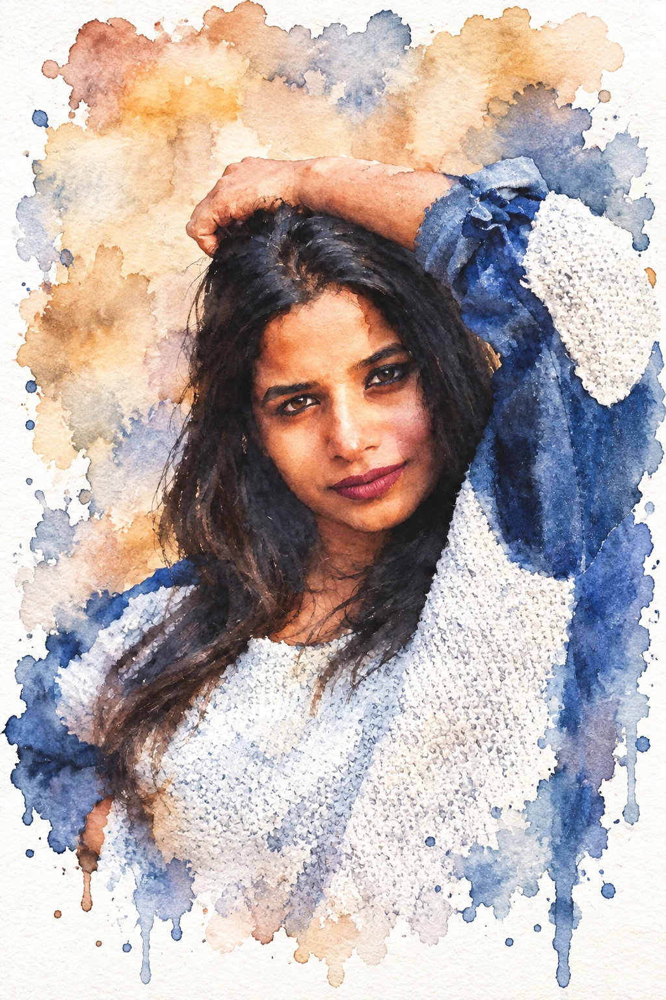
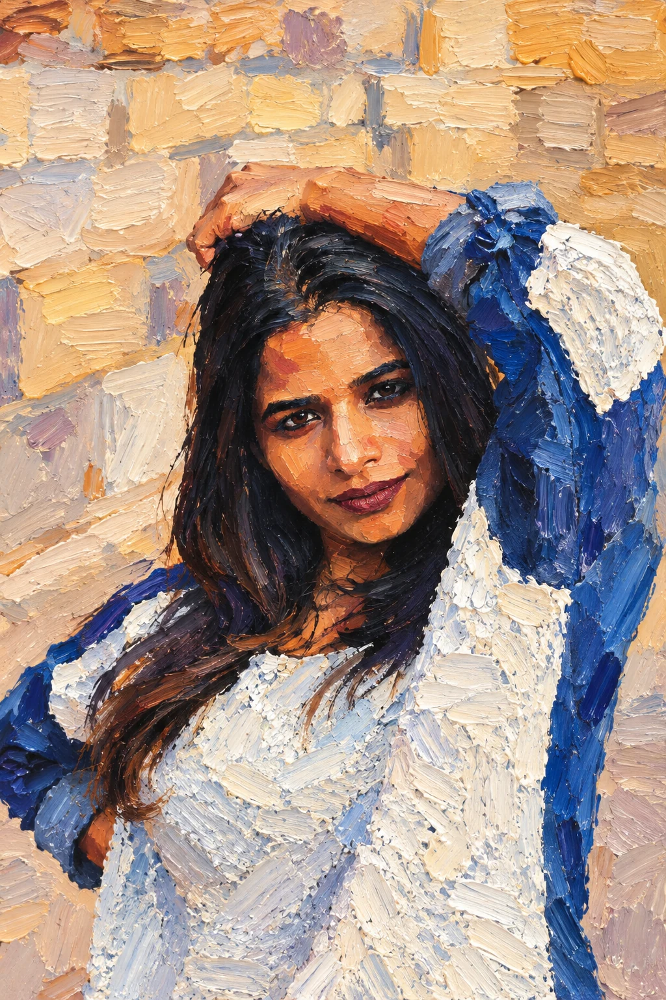
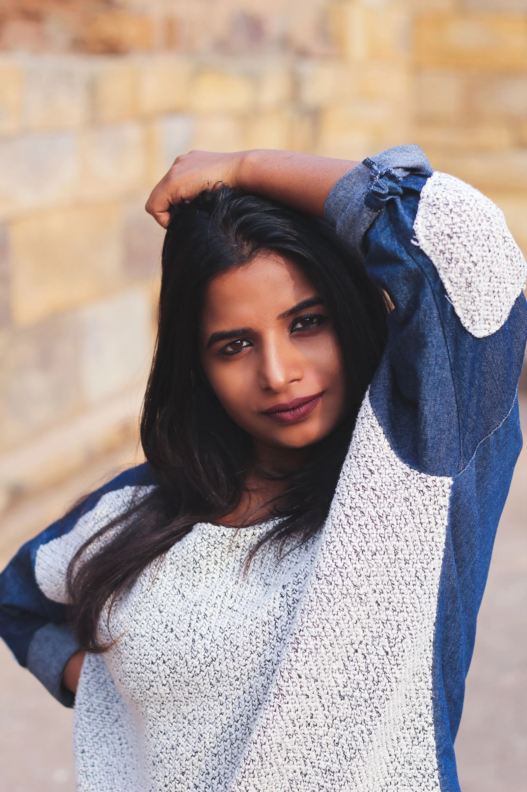
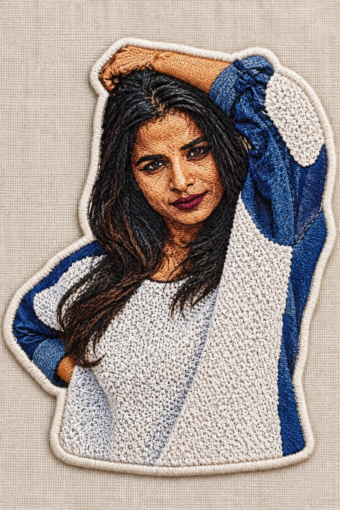

Как пользоваться промптами в ChatGPT
ChatGPT - это чат на сайте, в котором можно попросить создать картинку по описанию или изменить загруженное изображение. Ты можешь прикрепить фото и написать, что сделать с ним, либо попросить нарисовать новую сцену. Эти способы описаны в справке OpenAI.
Слово со слэшем, например /storypage, здесь служит коротким именем стиля. Это не встроенная команда ChatGPT. Копируй строку целиком вместе с английским описанием: именно полные строки использованы в наших пробах. Перевод ниже помогает понять, какую картинку ты просишь.
1. Подготовь фото или выбери новую сцену
Открой ChatGPT и новый чат. Если хочешь изменить свой снимок, прикрепи его к сообщению и дождись миниатюры. Для новой сцены фото не требуется: можно начать с одной строки из подборки. Если нужен конкретный предмет или надпись, добавь его описание или точный текст по-русски.
Результат: готов новый чат. Фото прикреплено, если нужно изменить свой снимок; для новой сцены можно переходить к выбору строки.
2. Отправь полную строку
Найди подходящий перевод ниже и нажми «Скопировать» на его плашке. Вставь строку в то же сообщение и отправь. Дождись готовой картинки. Для сравнения нескольких стилей каждый раз прикладывай исходник, чтобы следующий эффект не накладывался на предыдущий.
Результат: в чате появилась картинка, которую можно сравнить с исходником и переводом запроса.
3. Проверь нужные детали
Открой результат крупнее. Если эффект не тот, отправь ту же строку ещё раз или добавь по-русски, что оставить как есть. Например: «Сохрани лицо, позу и одежду, меняй только освещение». Повтор может дать другой результат. Выбранная область тоже не всегда ограничивает правку строго, об этом предупреждает OpenAI.
Когда картинка подходит, открой её и нажми Save («Сохранить»), чтобы скачать файл. Это действие описано в той же справке OpenAI.
Результат: сохранён файл, в котором виден нужный эффект и сохранены важные для тебя детали.
Пробы было/стало
Наши пробы: фото + строка целиком, одна попытка. Дополнительных уточнений и правок результата не было.
Акварель с мягкими краями
/wetpaper - watercolor bleeding edges


Исходник: Pexels №4032336, Pexels License. Результат создан генератором изображений.
Появились размытые цветовые края, капли и фактура бумаги. Лицо прорисовано подробнее окружающих пятен, поза и цвета одежды узнаваемы.
Густое масло
/thickpaint - thick oil brushstrokes


Исходник: Pexels №4032336, Pexels License. Результат создан генератором изображений.
На лице, волосах, одежде и фоне видны густые мазки. Сюжет сохранился, но мелкие детали стали частью живописной фактуры.
Вышитая нашивка
/threadart - embroidered fabric patch


Исходник: Pexels №4032336, Pexels License. Результат создан генератором изображений.
Вместо снимка появилась нашивка с плотными стежками и светлой каймой. Поза узнаваема, пропорции лица и мелкие детали изменились под вышивку.
Иллюстрация
24 строки. Читай перевод и копируй запрос с нужным эффектом.
/storypage - children's picture bookстраница детской книжки с картинками
/magpage - editorial magazine artиллюстрация для журнала
/scribbleframe - doodles around subjectкаракули вокруг главного предмета
/bigcheek - cute chibi big headмилый персонаж с большой головой
/cutesmile - kawaii pastel styleмилый стиль в пастельных цветах
/flatshadow - flat cel shadingплоские цветные тени как в мультфильме
/gamearl - game concept artэскиз образа для игры
/filmbg - painted film backgroundнарисованный фон для фильма
/watercolorbook - soft watercolor pageмягкая акварельная страница
/inkwashart - loose gray ink washсвободные серые размывы туши
/screenprint2 - flat screen printплоская трафаретная печать
/riso2 - risograph color overlapцветные слои печати накладываются друг на друга
/papercutart - layered paper cutслои вырезанной бумаги
/shadowpuppet - backlit puppet silhouetteсилуэт куклы с подсветкой сзади
/silhouetteart - plain black silhouetteобычный чёрный силуэт
/stainedart - stained glass styleстиль цветного витража
/muralwall - weathered wall muralпотёртая роспись на стене
/graffitiart - dripping spray graffitiграффити с потёками краски
/chalkart - sidewalk chalk drawingрисунок мелом на тротуаре
/crayonart - child's waxy crayonдетский рисунок восковыми мелками
/fingerpaint - smeared finger paintразмазанная пальцами краска
/spraypainl - soft paint cloudsмягкие облака распылённой краски
/stencilart - sharp stencil cutoutчёткий рисунок через трафарет
/collageart - magazine paper collageколлаж из журнальной бумаги
Живопись и рисунок
24 строки. Читай перевод и копируй запрос с нужным эффектом.
/wetpaper - watercolor bleeding edgesакварель с растекающимися краями
/thickpaint - thick oil brushstrokesгустые мазки масляной краски
/flatgouache - watte gouache blocksматовые цветовые пятна гуаши
/grayink - gray ink washсерые размывы туши
/smudgestick - smudged charcoalрастушёванный уголь
/chalktone - pastel on color paperпастель на цветной бумаге
/thickpaste - palette knife ridgesрельефные следы лопатки для краски
/wallpaint - old fresco wallстарая фреска на стене
/sprayart - spray paint canvasкраска из баллончика на холсте
/digitalpaint - polished digital paintпроработанный цифровой рисунок
/gesturedraw - loose gesture linesбыстрые свободные линии движения
/blindcontour - one continuous lineрисунок одной непрерывной линией
/crosshatchdraw - hatched pen shadingтени из штрихов пера
/stipplepoint - shading with dotsтени из множества точек
/scratchart - white scratched on blackбелые процарапанные линии на чёрном
/monoprint - uneven monoprint inkнеровный оттиск краски
/encausticwax - layered wax paintслои восковой живописи
/temperapaint - chalky temperaматовая краска темперы
/acrylicpour - swirled acrylic pourзавитки жидкого акрила
/inkdrip - ink drips down pageтушь стекает по странице
/washline - thin diluted washтонкий слой разбавленной краски
/drybrush - dry brush streaksполосы от сухой кисти
/finelineart - intricate fine linesсложный рисунок тонкими линиями
/roughsketch - construction lines visibleчерновой рисунок с видимыми линиями построения
Ручная работа
24 строки. Читай перевод и копируй запрос с нужным эффектом.
/inkline - thick black ink outlineтолстый чёрный контур тушью
/paperscrap - torn paper collageколлаж из рваной бумаги
/threadstitch - cross stitch patternузор для вышивки крестиком
/quickmarker - loose marker sketchсвободный набросок маркером
/printdots - old newsprint dotsточки старой газетной печати
/glasspane - stained glass windowокно из цветного стекла
/threadart - embroidered fabric patchвышитая тканевая нашивка
/grainshow - wood or fabric grainвидимая фактура дерева или ткани
/woodburn - burned into woodвыжженный рисунок на дереве
/leathertool - pressed leather groovesвдавленные бороздки на коже
/clayimprint - soft clay impressionотпечаток в мягкой глине
/feltcraft - fuzzy felt craftпушистая поделка из фетра
/macrame - knotted rope designузор из узлов верёвки
/beadwork - tiny colored beadsмелкие цветные бусины
/quilted - stitched fabric patchesсшитые лоскутки ткани
/origamiform - sharp folded origamiоригами с чёткими сгибами
/wirebent - bent wire sculptureскульптура из согнутой проволоки
/candlewax - carved wax dripsрезной воск с потёками
/soapcarve - hand carved soapмыло с ручной резьбой
/inkstamp - uneven stamped inkнеровный отпечаток туши
/rubberstamp - stamp ready to pressштамп, готовый к оттиску
/waxseal - wax seal on envelopeвосковая печать на конверте
/leafprint - real leaf printотпечаток настоящего листа
/sandart - colored sand layersслои цветного песка
Другие подборки серии
Семь тем, каждая со своими строками. Следующие подборки появятся здесь после публикации.
Фото стало картиной. Куда её деть?
Инструкция пройдена. А как сделать, чтобы нейросети приводили клиентов?
Концентрат - онлайн-мероприятие Ивана Сергеева по вайбмаркетингу: 13-15 октября, 19:00 по Москве. Участие бесплатное, регистрация на сайте до 14 октября
ЗарегистрироватьсяРеклама. ИП Сергеев И. С., ИНН 352511695540. erid: 2VtzqviiWtm
Что проверить перед сохранением
Выбранную технику видно по следу материала: у масла остаются мазки, у бумаги края вырезанных слоёв, у вышивки стежки. Короткая строка направляет рисунок, но не обещает одинаковый результат на каждом фото. Открой пробу крупнее, сравни эти признаки с переводом и сохрани тот вариант, в котором узнаётся и техника, и твой исходный сюжет.